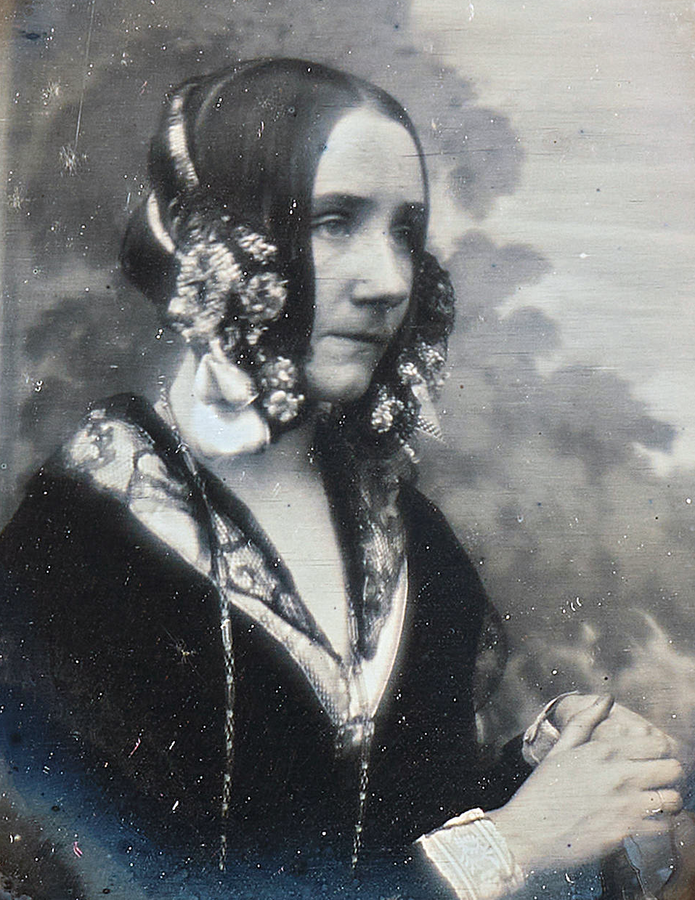
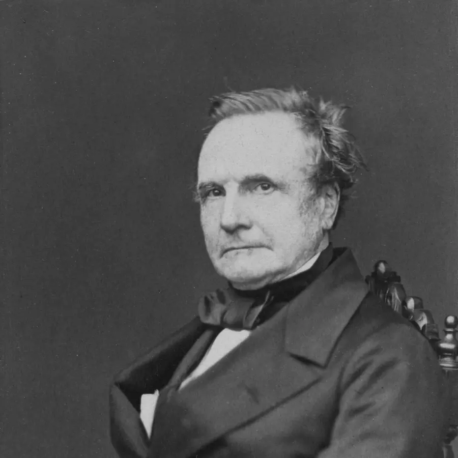
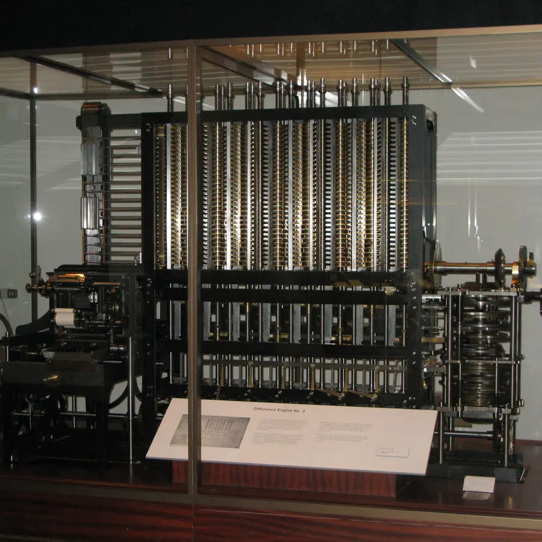
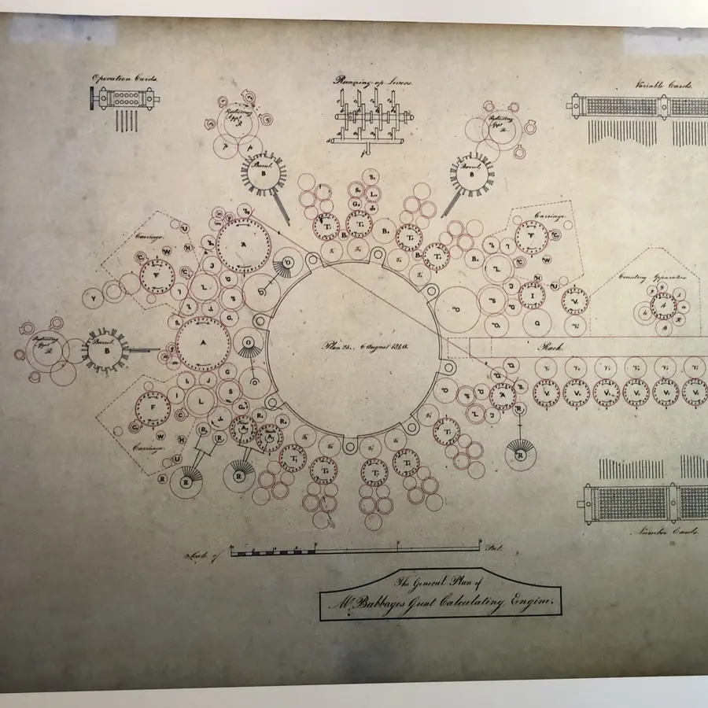
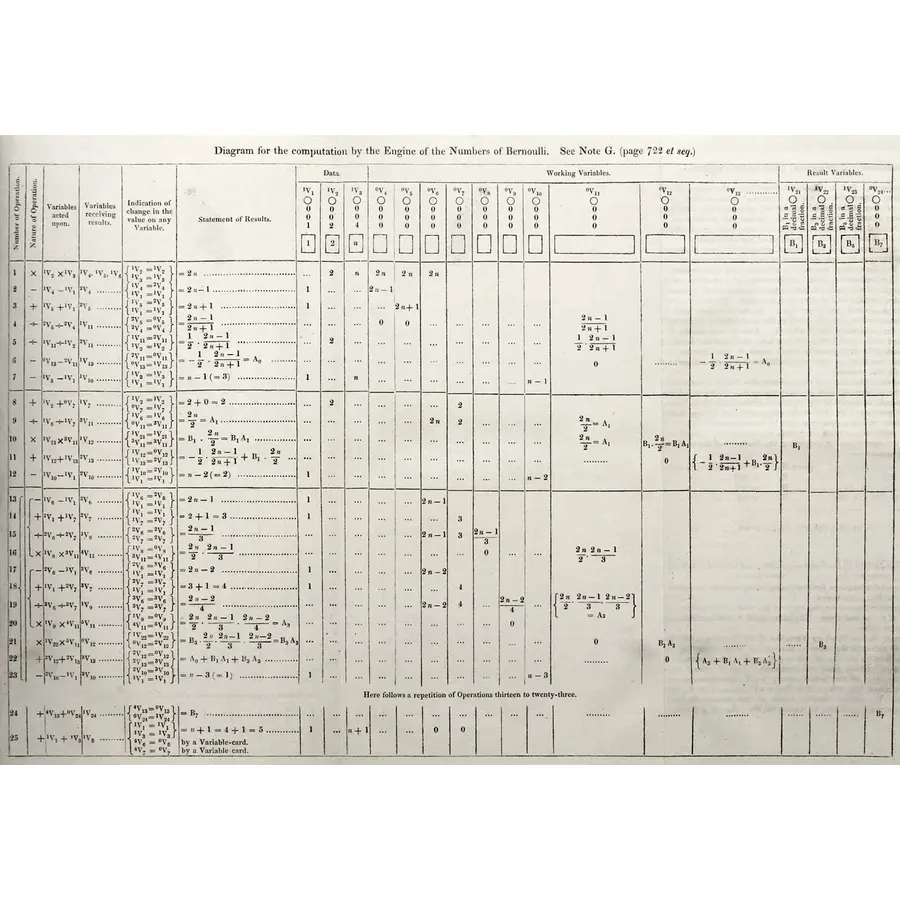

Computer Science · Mathematics · History of Science
Ada Lovelace
Augusta Ada King, Countess of Lovelace, was born in 1815 as the daughter of the poet Lord Byron. She never met a working computer — yet in 1843 she wrote the world's first algorithm: a precise, step-by-step set of instructions intended for Charles Babbage's Analytical Engine. Her notes introduced concepts like loops, subroutines, and the idea that a machine could manipulate symbols beyond mere arithmetic — a vision that predates Alan Turing by nearly a century.
Who Was Ada Lovelace?

Born December 10, 1815 in London, Ada's father was the Romantic poet Lord Byron, who left the family when Ada was one month old. Her mother, Anne Isabella Milbanke, fearful Ada would inherit Byron's "poetic madness," raised her on a strict diet of mathematics and logic — ironically the very discipline that made Ada famous.
At 17, Ada met Charles Babbage at a dinner party and immediately grasped the potential of his Difference Engine — a mechanical calculator. Babbage was so impressed that he introduced her to his plans for the far more ambitious Analytical Engine: a general-purpose mechanical computer with a mill (processor), store (memory), input via punched cards, and output via printer.
In 1842, Italian mathematician Luigi Menabrea published a description of the Analytical Engine in French. Babbage asked Ada to translate it. She did — and added her own notes (labeled A through G) that were nearly three times longer than the original article. Note G contained an algorithm for computing Bernoulli numbers — history's first published computer program.
Ada died of uterine cancer on November 27, 1852, aged 36 — the same age as her father Byron. She was buried beside him at the Church of St. Mary Magdalene in Hucknall, Nottinghamshire. In 1980, the US Department of Defense named its new programming language "Ada" in her honor.
Real Machines, Real Documents
This isn't an abstract story. The man, the machine, and the algorithm all survive — in a photograph, a working replica, and Ada's own handwritten table of instructions.

The mathematician and inventor who designed the Difference Engine and the Analytical Engine — and who invited Ada into his circle.

Built from Babbage's design in 2002, nearly two centuries later — proof his mechanical calculator would have worked. On display in London.

Babbage's own drawing of the Analytical Engine, labeling the operation cards, variable cards, and number cards that would program it.

The actual published table — 25 operations across working variables — that historians recognize as the first computer program.
A Life Ahead of Its Time
- 1815 Born in London; father is poet Lord Byron.
- 1816 Byron leaves; mother raises Ada on a strict curriculum of mathematics and logic.
- 1832 Contracts measles; temporarily paralyzed; spends years bedridden — studies mathematics intensively.
- 1833 Meets Charles Babbage at a dinner party; sees the Difference Engine prototype.
- 1835 Marries William King (later Earl of Lovelace); becomes Countess of Lovelace.
- 1840 Babbage lectures in Turin on the Analytical Engine; Menabrea writes a description in French.
- 1842 Asked to translate Menabrea's paper from French; begins adding her own extensive notes.
- 1843 Publishes translation + Notes A–G; Note G contains the Bernoulli algorithm — the first computer program.
- 1844 Notes describe loops, subroutines, and the idea the machine could compose music.
- 1852 Dies aged 36; buried beside Lord Byron at the Church of St. Mary Magdalene.
- 1980 US Department of Defense names the "Ada" programming language in her honor (MIL-STD-1815).
What Is an Algorithm — and Why Did It Matter?
An algorithm is a finite, ordered sequence of unambiguous instructions to solve a problem. Before Ada, "computing" meant human clerks doing arithmetic by hand. Babbage's Analytical Engine could follow programmed instructions on punched cards — but no one had described how to write those instructions systematically.
Ada was the first to describe: conditional branching (if X then do Y), loops (repeat until), and subroutines (reusable named operations). Her Bernoulli algorithm used a loop that updated 8 variables across 25 operation steps — structurally identical to a for-loop in any modern language.
Most radically, she wrote that the Engine "might act upon other things besides number... supposing, for instance, that the fundamental relations of pitched sounds in the science of harmony and of musical composition were susceptible of such expression... the Engine might compose elaborate and scientific pieces of music." — 1843
Bn ← f(B0, B1, ..., Bn-1)
OUTPUT: B8 ← Bernoulli number
Ada's Note G contained this structure — the world's first loop in a published algorithm.
The Engine's Four Parts — Mapped to a Modern Computer
The Analytical Engine had every major part a computer still has today, just built from brass and steam instead of silicon.
Performed arithmetic on numbers fed to it.
= CPUHeld up to 1,000 numbers of 50 digits each, in columns of gears.
= Memory / RAMFed in the sequence of operations and the data, borrowed from the Jacquard loom.
= Program / InputPlanned to print results directly, removing human transcription error.
= OutputFrom Ada's Notation to Modern Code
Ada wrote in tables and arrows because no programming language existed yet. Every concept she used has a direct equivalent in a language like Python — the ideas didn't change, only the syntax did.
| Concept | Ada's Note G (1843) | Modern Python |
|---|---|---|
| Loop | FOR n FROM 1 TO 8: repeat block |
for n in range(1, 9): |
| Register / Variable | V3 ← V0 × V1 |
v3 = v0 * v1 |
| Conditional Branch | Loop check: n < 8? |
if n < 8: |
| Output | Output: B3 = −1/30 |
print(b3) |
Python's range(1, 9) counts 1 through 8 — it stops before the second number. That's a real, common bug source; you'll see it again in the Practice section below.
Where does the Turing Test connect to this?
Is the Ada programming language still used?
Was the Analytical Engine ever actually built?
Punched Cards: How the Engine Was Programmed
Babbage borrowed his input method from the Jacquard loom, which used punched cards to weave patterns into fabric — a hole let a hook pass through, no hole blocked it. The Analytical Engine used the same idea for numbers: each hole position that's punched represents a 1, and each unpunched position represents a 0. This is binary, encoded in cardboard, decades before electricity had anything to do with computing.
Click the holes below to punch or unpunch them, just like an operator preparing a card by hand.
Trace It Yourself: Predict the Registers
Before you watch the simulator run, try being the engine. The real Bernoulli numbers are awkward fractions, so let's trace the exact same sequence of operations — Steps 4 through 10 from the Algorithm section above — using easy, round stand-in numbers instead.
For each row, work out the value the operation writes into the register, and type it into the blank. Everything you need is already in the table — either a "given" value above, or a result from an earlier row.
| Step | Operation | V3 | V4 | V5 | V6 | V7 |
|---|---|---|---|---|---|---|
| 4 | V3 ← V0 × V1 | — | — | — | — | |
| 5 | V4 ← V3 + V2 | 40 | — | — | — | |
| 6 | V5 ← V4 / 2 | 40 | 46 | — | — | |
| 7 | V3 ← V1 × V2 | 46 | 23 | — | — | |
| 8 | V6 ← V3 + V5 | 24 | 46 | 23 | — | |
| 9 | V3 ← V2 × V2 | 46 | 23 | 47 | — | |
| 10 | V7 ← V3 / 6 | 36 | 46 | 23 | 47 |
Interactive Analytical Engine — Bernoulli Sequence
Watch Ada's algorithm execute step by step. The Analytical Engine used gear columns as memory registers — think of each column below as a labeled jar that holds exactly one number at a time. Press Run and read the explanation panel under the readouts: it translates every step into plain English as it happens, no programming background required.
Press Run or Step Forward to begin. Each step will be explained here in plain English as the engine executes it.
Ada's Key Contributions
Note G of her translation described a step-by-step process for computing Bernoulli numbers — the first algorithm intended for execution by a machine, not a human.
Ada described how a sequence of operations could be repeated with updated values — the foundation of every for-loop, while-loop, and recursive function in computing today.
She recognized the Engine could take different action paths based on intermediate results — the origin of if/then/else logic in all programming languages.
Ada foresaw that if numbers could represent musical notes, the Engine could compose music. This is the earliest documented vision of a general-purpose symbolic computer.
She described reusable operation sequences — the concept that became functions, procedures, and methods in all modern software.
The US Department of Defense named its safety-critical programming language Ada in her honor, recognizing her as the mother of software. Ada is still used in aviation, rail, and defense.
Ada Lovelace's Legacy Today
Ada Lovelace Day (second Tuesday of October) celebrates women in STEAM globally, inspired by her legacy. Alan Turing cited Babbage and Lovelace's work in his 1950 paper "Computing Machinery and Intelligence" — the paper that introduced the Turing Test.
Every modern programming concept — variables, loops, conditionals, subroutines — traces conceptually to Ada's 1843 notes. The separation of hardware and software (the Engine could run any algorithm on punched cards) is Ada's most profound insight — 100 years before von Neumann architecture.
Ada grasped that the Analytical Engine's punched-card programs were separate from the machine — the first conception of software as distinct from hardware. This idea, that the same machine could be reprogrammed to solve any problem, is the founding principle of every computer ever built.
An algorithm's time complexity — O(n) — means the number of operations grows linearly with input n. Ada's Bernoulli loop ran in O(n) steps.
Practice Problems
Think about algorithms, loops, and the history of computing.
Easy1. In what year did Ada Lovelace publish the world's first algorithm?
Easy2. What programming concept did Ada describe as repeating a sequence of operations with updated values?
Medium3. An algorithm has 3 nested loops each running n = 10 times. How many total operations are executed? (Hint: 10 × 10 × 10 = ?)
Medium4. Ada's Note G computed which mathematical sequence?
Challenge5. Which of these is closest to Ada's most radical insight about the Analytical Engine?
Medium6. On an 8-hole punched card, holes 1, 3, and 8 are punched — all others are left blank. Hole 1 = 128, hole 2 = 64, hole 3 = 32, hole 4 = 16, hole 5 = 8, hole 6 = 4, hole 7 = 2, hole 8 = 1. What decimal number does this card represent?
Easy7. Which part of the Analytical Engine is the direct ancestor of a modern computer's RAM (memory)?
Debug8. This code should copy Step 4 of the algorithm — with V0 = 10 and V1 = 4, it should produce 40. Instead, it produces 14: v3 = v0 + v1. What's the bug?
Debug9. This loop should compute all 8 Bernoulli numbers (n = 1 through 8), but it only computes 7: for n in range(1, 8):. In Python, range(1, 8) produces 1, 2, 3, 4, 5, 6, 7 — it stops before the second number. What's the fix?